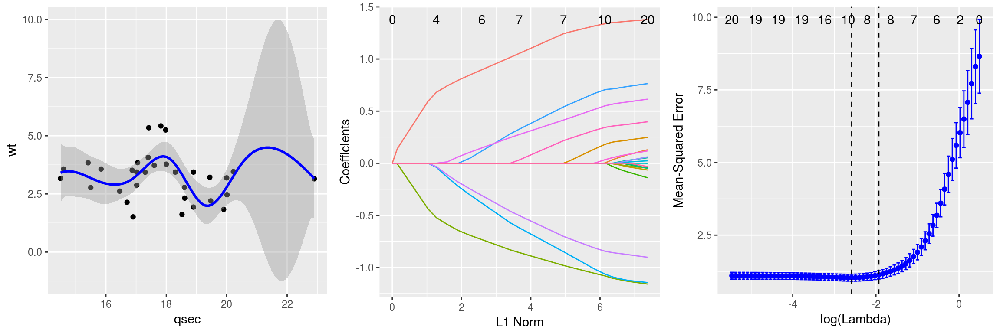
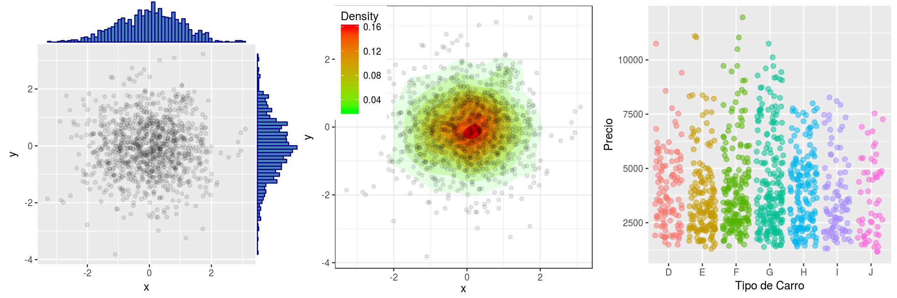

Minería de Datos con R
Minería de Datos con R
Introducción.
Los datos han pasado a constituir parte escencial de cualquier empresa, desde el ámbito del entretenimiento personal hasta los negocios y la planificación estratégica de grandes organizaciones. Las tecnologı́as de captura, procesamiento y comunicación de datos los han puesto en primer plano. La noción de diluvio de datos hace referencia a esa marea aparentemente incontenible de datos que rodean a las personas y organizaciones hoy. Para analizar y sacar el máximo provecho de este gran volumen de datos, los profesionales requieren tener conocimiento tanto teórico como prácticos de lo que se conoce como Ciencia de los Datos o más conocido como datascience que incluye áreas de Minerı́a de Datos, Recuperación de Información , visualización y gestión de datos. El presente curso apunta a formar profesionales que trabajen como analistas expertos en el manejo de datos complejos y masivos, por otro lado, proporcionará las bases del lenguaje de programación estadı́stica en R, la lengua franca de la estadı́stica, el cual te permitirá escribir programas que lean, manipulen y analicen datos estructurados , como datos no estructurados, una introducción a los sistemas de base gráficos y al paquete para graficar ggplot2 para visualización de datos entre otros.
Objetivos.
Al término del curso, podrás manipular datos, generar análisis estadistı́cos y representación gráfica a través del procesamiento cuantitativo de datos de forma eficiente, clara y elegante mediante reporterı́a markdown y knitr. Este curso esta dirigido a cualquier persona que le apasiona el análisis de datos, la visualización y la construcción de modelos predictivos.
Contenidos.
Módulo 1: Fundamentos de R.
Comenzamemos a familiarizarnos con Rstudio y las primeras nociones de R. ¿Como ingreso instrucciones?, ¿Como guardo mis instrucciones?, ¿En que directorio estoy?, ¿Como corro mis primeros códigos?. Aprenderemos a escribir vectores, matrices y arreglos, listas, dataframes, crear factores , tablas y crear nuestas propias funciones. En definitiva, introduciremos R desde cero para todo aquel que no está familiarizado con este entorno
Además, realizaremos operaciones con variables en R, operaciones aritméticas, operaciones lógicas, comandos condicionales para comprobar el uso de operaciones lógicas, estructura de conjunto de datos o datasets. Utilización de dataframes. En particular, un dataframe es una matriz en la que filas son observaciones y las columnas variables que hay de cada observación. En esta parte generaremos dataframes con el que operaremos el resto del curso. Veremos como crear subsets del dataframe original y aprender a acceder a estos datos. Datos indexados en el tiempo, elementos de algebra matricial, y simulación estadı́stica.
Módulo 2: Origen y limpieza de Datos.
Las fuentes de datos suelen ser una de las mayores preocupaciones, pues las principales preguntas que rondan en la cabeza de los cientı́ficos de datos a la hora de trabajar son: ¿De donde obtengo los datos?, ¿Como trabajo con datos que son no estucturados?, ¿Cómo convertirmos en un dataframe u otro objeto que podamos utilizar en R?. Crearemos scripts de preprocesamiento de datos utilizando dplyr y plyr, librerı́as potentes a la hora de procesar datos puesto que nos permiten filtrar filas y columnas, seleccionar columnas, seleccionar filas, crear nuevas variables, pivotear tablas , crear resumenes estadı́sticos, transformar datos, etc. En resumen, permite emular lo que hace SQL en una base de datos estructurada desde la comodidad de Rstudio.
Módulo 3: Modelización y Predicción.
El aprendizaje es una habilidad de la que disponen gran parte de los sistemas naturales para adaptarse al entorno en el que viven. Es por ello una propiedad interesante de emular de manera artificial puesto que muchos problemas de ingenierı́a requieren para su correcto funcionamiento algún tipo de adaptación al entorno en el que operan. Definir de manera única y precisa el término aprendizaje resulta complicado ya que se debe abordar desde diferentes puntos de vista. En el contexto de sistemas artificiales, el aprendizaje es un proceso que produce una función de aplicación de la información de entrenamiento extraı́da de algún entorno. Sin embargo, es necesario que el aprendizaje efectue algún tipo de inducción a partir de la información disponible.
Para poder inducir, se precisa de un conjunto de medidas o ejemplos asociado al proceso que se quiere modelar. Este tipo de aprendizaje, denominado aprendizaje inductivo, se convierte de hecho en un aprendizaje con ejemplos que es en el fondo un problema de aproximación de una función de la que se conoce unicamente un conjunto de puntos. No obstante, este proceso es complejo por dos aspectos: un gran número de variables asociado al espacio de entrada de la función a aproximar y las muestras disponibles suelen ser escasas y tener asociada una cierta incertidumbre. Exiten dos maneras fundamentales de aprender con ejemplos. En la primera, conocida con el nombre de aprendizaje no supervisado son aquellos en lo que no disponemos de un conjunto de ejemplos previamente clasificados, si no que unicamente a partir de las propiedades de los ejemplos intentamos dar una clasificación, o clustering de los ejemplos segun su similaidad, en este ı́tem, tenemos los modelos como KNN, K-means. De la otra vereda, los modelos de aprendizaje supervisado son aquellos que, a partir de un conjunto de ejemplos clasificados o más conocido como conjunto de entrenamiento, intentamos asignar una clasificación a un segundo conjunto de datos conocidos como conjunto. Dentro de esta categorı́a tenemos los métodos de Boosting, Regresión, entre otros.

Módulo 4: Visualización de Datos y Reportes.
En este módulo vamos a dar un repaso general de las principales funciones gráficas que ofrece R base. Como R está especificamente diseñado para la ciencia de los datos, incluye en su raı́z una buena cantidad de opciones para dibujar gráficos de forma versátil, clara y eficiente. Sin embargo, esto no es todo el potencial que puede brindar R en cuanto a la visualización de datos. Existen diferentes paquetes mucho más potente como lo son ggplot2 y Highcharter. Otra de las herramientas que veremos en este módulo es knitr y markodwn. Knitr es una herramienta utilizada para generación de informes dińamicos en R. Este paquete permite integrar código de R en documentos LaTeX, LyX, HTML, Markdown, entre otros. Knitr esta inspirado en Sweave y escrito con un diseño diferente para mejor modularidad, asi que es más fácil de mantener y extender. Sweave puede ser considerado como subconjunto de Knitr , pues todas las caracterı́sticas de Sweave están disponibles en Knitr. Algunas extensiones de incluyen el formato R markdown que es ampliamente utilizado en informes publicados en Rpub.

Módulo 5: Finanzas Computacionales.
Harry Markowitz concibió el problema de selección de cartera como un ejercicio de optimización de ventana media. Esto requirió mas potencia de cálculo de la que estaba disponible en ése entonces, por lo que trabajó en algoritmos útiles para soluciones aproximadas. Con la misma idea, comenzaron las matemáticas financieras pero divergieron haciendo suposiciones simplificadoras para expresar soluciones cerradas simples que no requirieron sofisticadas ciencias de la computación para evaluar.
Durante la década del 70 el enfoque principal de las finanzas se centró en el precio de las acciones y el análisis de tı́tulos hipotecarios. A fines de los 70 y principios de los 80 llegó a Wall Street un grupo de jovenes profesionales cuantitativos que se hicieron conocidos como cientı́ficos de cohetes y trajeron consigo sus computadoras personales. Esto condujo a una explosión de la cantidad y variedad de aplicaciones en finanzas computacionales. Muchas de las nuevas técnicas provienen del procesamiento de señales, reconocimiento de voz en lugar de los campos tradicionales de economı́a computacional como optimización y análisis de series temporales. A finales de los 80, al término de la Guerra Frı́a un gran grupo de fı́sicos y matemáticos aplicados desplazados llegaron a Wall Street. Estas personas se conocen como ingenieros financieros. Esto dio lugar a una segunda extensión de la gama de métodos computacionales utilizados en finanzas, también dio a paso de las computadoras personales a centrales y supercomputadoras.
La estadı́stica en este campo, no ha quedado ajena puesto que con el avance de la computación y el escalamiento considerable de la información disponible en cada instante del tiempo ha permitido que diversos estudios empı́ricos se centren en descubrir caracterı́sticas estadı́sticas interesantes en los datos de series temporales destinadas a ampliar y consolidar hechos estilizados conocidos 4 , la implementación de modelos que mejoran el precio de los derivados y anticipa el movimiento del precio de las acciones entre otros. En este módulo veremos elementos de riesgo financiero como VaR (Value at Risk), series de tiempo no lineales y estimación, aplicaciones en la construcción de portafolios de inversión con datos de la Bolsa de Santiago y datos de Yahoo Finance

Copyright © 2018 Andres C. Medina. All rights reserved.